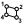

 Deconstruct Wireframe
Component Index > LunchBox > LunchBox Util > Deconstruct Wireframe
Organizes a wireframe curve structure into nodes and centerlines
Inputs
| Name | ID | Description | Type |
|---|---|---|---|
| Crvs | Curve network to organize. | Curve |
Outputs
| Name | ID | Description | Type |
|---|---|---|---|
| Nodes | List of nodes. | Generic Data | |
| CrvDef | Definition of curve by end point index. | Generic Data |
Copyright © 2016 Robert McNeel & Associates.